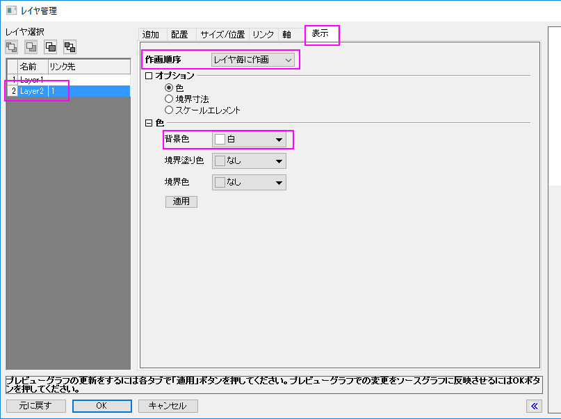
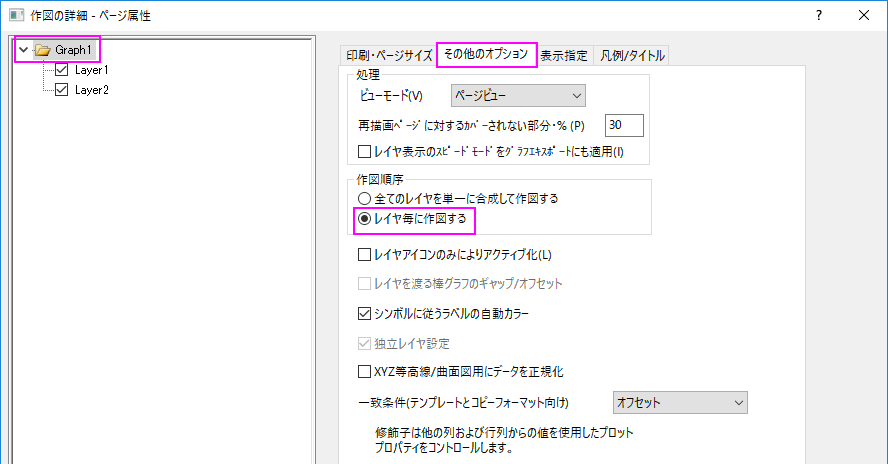
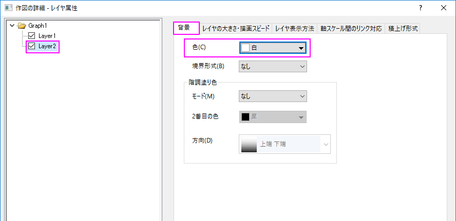

FAQ-830 レイヤを白地にするには？
How_to_white_out_a_layer
最終更新日:2016/09/19
例えば、グラフに2つのレイヤがあるものとします。Layer2が背景色になっていても、通常、両方のレイヤにデータの全てが表示されるようになっています。白地背景のLayer2のデータを作図したい場合、レイヤの管理ダイアログか作図の詳細ダイアログで、レイヤの描画順を指定します。
レイヤ管理ダイアログ
- グラフをアクティブにして、メインメニューからグラフ操作：レイヤの管理...を選択してレイヤ管理ダイアログを開きます。
- ダイアログの左のパネルでLayer2を選択して、
- 表示タブを開きます。作図順序のドロップダウンリストからレイヤ毎に作図を選択して、Layer2がLayer1の後に描画されるように指定します。レイヤ毎に描画する際に、Layer2の背景色を指定すると、背景がLayer1の要素をマスクします。
- 背景色でWhiteを選択して、適用をクリックして背景色を設定します。
- OK をクリックして終了します。
- 
作図の詳細ダイアログ
- データプロットを直接ダブルクリックして、作図の詳細ダイアログボックスを開きます。
- 左のパネルでグラフのツリーノードを選択して、その他のオプションタブを開き、作図順序でレイヤ毎に作図するを選択します。
- 
- 左のパネルでLayer2のツリーノードを選択して、背景タブを開き、色に白を設定します。
- 
- OKボタンをクリックして設定します。
| Note:背景をなしのままにすると、Layer1のデータは表示されます。 |
キーワード:レイヤ、背景、描画順序、描画、白地